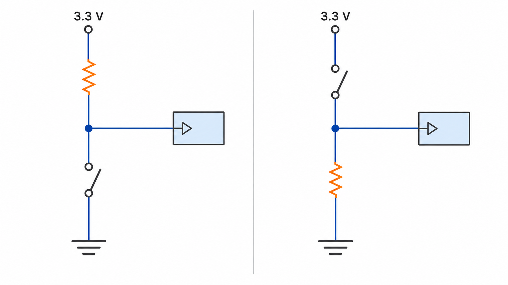
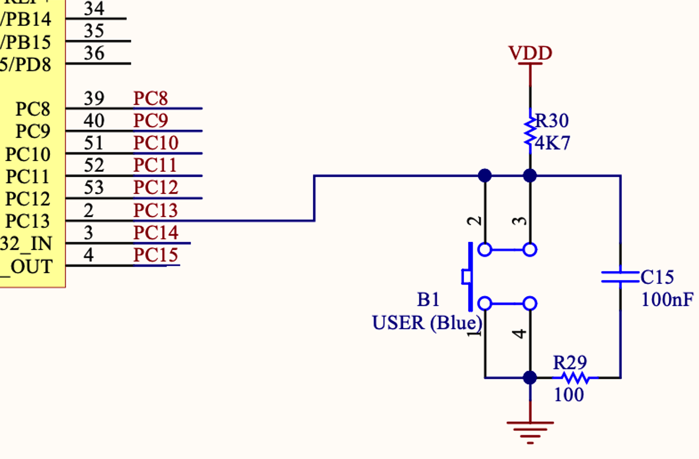

L05 - GPIO and Hardware Abstraction
Both statements turn PA5 on. The hardware result is the same; the interface is different.
Today we will connect every HAL name to the register behavior learned in Week 4.
01 WEEK 4: calculate masks and write CMSIS registers directly.
02 TODAY: describe the same configuration with a HAL structure and functions.
03 EVIDENCE: inspect the registers after HAL runs and confirm the physical result.
HAL does not replace the hardware model. It gives the program another way to express it.
01 Read a GPIO_InitTypeDef configuration structure.
02 Connect HAL mode, pull, and speed names to GPIO register fields.
03 Use HAL functions to write, toggle, and read GPIO pins.
04 Explain floating inputs, pull-up, pull-down, and button logic.
05 Compare direct CMSIS access with HAL using debugger evidence.
01 POINTER MEMBER — the MODER member of the register structure that the CMSIS pointer GPIOA points to.
02 MASK — 3U << 10 selects bits 11 and 10, PA5’s mode field.
03 RESULT — clear then set leaves 01: general-purpose output.
04 HARDWARE — read GPIOA->MODER in the SFR view (bits 11:10 = 01); ODR/LD2 confirm the output path.
Today: the exact same bits — written by a function with names instead of masks.
RCC->AHB1ENR |= (1U << 0);
GPIOA->MODER &= ~(3U << 10);
GPIOA->MODER |= (1U << 10);
GPIOA->BSRR = (1U << 5);1 Which statement enables GPIOA?
2 Which two statements configure PA5 as an output?
3 Which statement changes the output pin?
HAL changes how you write the command—not which hardware receives it.
The HAL call is longer, but each argument states its job directly.
GPIO_InitTypeDefGPIO_InitTypeDef output = {0};
output.Pin = GPIO_PIN_5;
output.Mode = GPIO_MODE_OUTPUT_PP;
output.Pull = GPIO_NOPULL;
output.Speed = GPIO_SPEED_FREQ_LOW;GPIO_InitTypeDef is a structure type supplied by the STM32 HAL headers. output is our variable name, and the dot selects one setting inside it.
The {0} initializes every member to zero before individual settings are assigned.
Deep dive: UM1725 Rev 8, GPIO functions — p. 447.
01 Pin selects PA5 using the mask GPIO_PIN_5.
02 Mode requests push-pull output: the pin can actively drive both high and low.
03 Pull requests no internal pull resistor.
04 Speed requests the low output transition-speed setting.
&output passes the structure’s address so the function can read its members.
| HAL configuration | Register effect for PA5 |
|---|---|
GPIO_PIN_5 |
select pin 5 |
GPIO_MODE_OUTPUT_PP |
MODER[11:10] = 01, OTYPER[5] = 0 |
GPIO_NOPULL |
PUPDR[11:10] = 00 |
GPIO_SPEED_FREQ_LOW |
OSPEEDR[11:10] = 00 |
The HAL function converts the named settings into register operations.
Deep dive: RM0368 Rev 6, §8 GPIO — p. 146.
GPIO speed does not set the blink frequency:
OUTPUT TRANSITION SPEED
Controls how strongly and quickly the pin voltage changes.
Use the lowest GPIO speed that satisfies the electrical requirement.
1 CONFIGURE .ioc
PA5 → GPIO output
→
2 GENERATE CODE
CubeMX writes C
→
3 CALL ONCE
MX_GPIO_Init()
→
4 USE IN LOOP
HAL GPIO calls
CubeMX removes repetitive typing; you must still check the generated settings.
static void MX_GPIO_Init(void)
{
GPIO_InitTypeDef config = {0};
__HAL_RCC_GPIOA_CLK_ENABLE();
HAL_GPIO_WritePin(GPIOA, GPIO_PIN_5,
GPIO_PIN_RESET);
config.Pin = GPIO_PIN_5;
config.Mode = GPIO_MODE_OUTPUT_PP;
config.Pull = GPIO_NOPULL;
config.Speed = GPIO_SPEED_FREQ_LOW;
HAL_GPIO_Init(GPIOA, &config);
}Read top to bottom: clock → safe starting level → settings → initialization. Here, generated static means this helper is used only inside this source file.
HAL_GPIO_WritePin01 GPIOA chooses the peripheral port.
02 GPIO_PIN_5 chooses one or more pins with a mask.
03 GPIO_PIN_SET requests a high output level.
Use GPIO_PIN_RESET for a low output level.
| Function | Job | Result |
|---|---|---|
HAL_GPIO_WritePin(port, pin, state) |
force high or low | no return value |
HAL_GPIO_TogglePin(port, pin) |
reverse the output | no return value |
HAL_GPIO_ReadPin(port, pin) |
sample an input | GPIO_PIN_SET or GPIO_PIN_RESET |
Configuration happens once. These functions are used while the program is running.
Each function is a few lines of C: stm32f4xx_hal_gpio.c — read HAL_GPIO_WritePin and find the BSRR write.
If nothing drives the pin high or low, electrical noise can change the value that the program reads.
01 HIGH means the pin voltage is near the logic-high range.
02 LOW means the pin voltage is near the logic-low range.
03 FLOATING means no circuit establishes either level reliably.
While the switch is open, only the resistor defines the level.

| Pull-up circuit | Pull-down circuit |
|---|---|
| resistor to 3.3 V; switch to ground | switch to 3.3 V; resistor to ground |
released (open) → 1; pressed (closed) → 0 |
released (open) → 0; pressed (closed) → 1 |
PUPDR register| Two-bit field | Internal connection |
|---|---|
00 |
no internal pull |
01 |
internal pull-up |
10 |
internal pull-down |
11 |
reserved |
PC13 starts at bit 13 × 2 = 26, so its two-bit field is bits 27:26.
Deep dive: RM0368 Rev 6, GPIOx_PUPDR — p. 159.
| Required default | Circuit choice | PUPDR |
HAL setting |
|---|---|---|---|
| no default | no internal pull | 00 |
GPIO_NOPULL |
released reads 1 |
pull-up | 01 |
GPIO_PULLUP |
released reads 0 |
pull-down | 10 |
GPIO_PULLDOWN |
The Nucleo button already has an external pull-up, so it does not need an internal one.

B1 USER ON PC13
GPIO_PIN_SETGPIO_PIN_RESETThe button is active-low: pressed means logic 0.
GPIO_InitTypeDef config = {0};
__HAL_RCC_GPIOC_CLK_ENABLE();
config.Pin = GPIO_PIN_13;
config.Mode = GPIO_MODE_INPUT;
config.Pull = GPIO_NOPULL;
HAL_GPIO_Init(GPIOC, &config);No output speed is required for a plain input.
HAL_GPIO_ReadPinGPIO_PIN_SET
PC13 is high → B1 released
GPIO_PIN_RESET
PC13 is low → B1 pressed
GPIO_PinState is the HAL’s name for this two-value result: GPIO_PIN_RESET or GPIO_PIN_SET.
while (1) {
GPIO_PinState button =
HAL_GPIO_ReadPin(GPIOC, GPIO_PIN_13);
if (button == GPIO_PIN_RESET) {
HAL_GPIO_WritePin(GPIOA, GPIO_PIN_5,
GPIO_PIN_SET);
} else {
HAL_GPIO_WritePin(GPIOA, GPIO_PIN_5,
GPIO_PIN_RESET);
}
}B1 pressed → LD2 on. B1 released → LD2 off.
| B1 condition | HAL_GPIO_ReadPin |
if condition |
LD2 command |
|---|---|---|---|
| released | ? | ? | ? |
| pressed | ? | ? | ? |
1 Fill the four missing values in each row.
2 What single comparison would reverse the behavior?
3 Which debugger observation would prove the input changed?
01 After MX_GPIO_Init(), inspect GPIOA->MODER bits 11:10 for 01.
02 Inspect GPIOC->MODER bits 27:26 for 00.
03 Inspect GPIOC->PUPDR bits 27:26 for 00.
04 Watch GPIOC->IDR bit 13 while pressing and releasing B1.
05 Confirm the PA5 output state agrees with LD2.
A successful build proves valid translation and linking—not correct pin behavior.
| Question | Direct CMSIS access | STM32 HAL |
|---|---|---|
| What do you write? | registers and masks | structures and functions |
| What stays visible? | every register operation | intent and named configuration |
| Main strength | precise control and transparency | readability and faster development |
| Main cost | more device-specific detail | extra software layer and hidden operations |
Neither interface removes the need to understand the circuit and verify the result.
01 CUBEMX owns the generated peripheral initialization.
02 USER CODE REGIONS own application calls and controlled changes.
03 CMSIS REGISTER VIEWS provide evidence of what HAL changed.
04 DIRECT WRITES are used only when the exercise explicitly assigns that ownership.
Do not let CubeMX and hand-written register code silently fight over the same pin configuration.
01 INIT NOT CALLED: MX_GPIO_Init() never runs before the loop.
02 WRONG PORT OR PIN: GPIOA is paired with a PC13 mask, or vice versa.
03 WRONG PULL: the default input level does not match the circuit.
04 REVERSED LOGIC: the program treats the released value as pressed.
05 CODE REGENERATED: edits outside USER CODE regions disappear.
Rebuild the Week 4 LED behavior with HAL, then use B1 to control LD2 and prove the HAL configuration in the register view.
You will demonstrate:
✓ Read the members of GPIO_InitTypeDef.
✓ Connect HAL mode, pull, and speed names to register fields.
✓ Explain floating, pulled-up, and pulled-down inputs.
✓ Write and read pins through HAL functions.
✓ Use the register view to verify HAL configuration.
Trace the complete chain: circuit connection → PUPDR bits → HAL setting → value read by the program.
Next: replace continuous button polling with an interrupt-driven event.
01 REGISTER: PC13’s MODER and PUPDR fields — what values?
02 POINTER: Why does HAL_GPIO_Init receive &config?
03 LOGIC: Which read value means B1 is pressed?
04 EVIDENCE: What would you inspect after the HAL call?
Scan before you leave — ungraded; your answers open the next lecture.
Every concept in this lecture, with page-linked sources: academic references.
EE5203 - L05